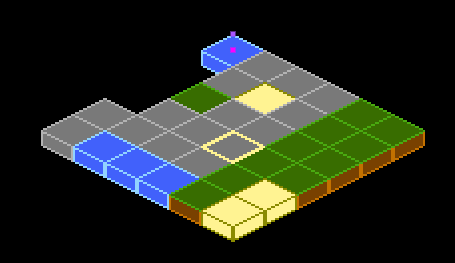

Components¶
This diagram might look intimidating, but don’t worry, it is not as complex as it looks.
Component¶
All components inherit from the Component class and can have other Components as children.
This is the base of what we call the Flame Component System, or FCS for short.
Children can be added either with the add(Component c) method or directly in the constructor.
Example:
void main() {
final component1 = Component(children: [Component(), Component()]);
final component2 = Component();
component2.add(Component());
component2.addAll([Component(), Component()]);
}
The Component() here could of course be any subclass of Component.
Every Component has a few methods that you can optionally implement, which are used by the
FlameGame class.
Component lifecycle¶
The onGameResize method is called whenever the screen is resized, and also when this component
gets added into the component tree, before the onMount.
The onParentResize method is similar: it is also called when the component is mounted into the
component tree, and also whenever the parent of the current component changes its size.
The onRemove method can be overridden to run code before the component is removed from the game,
it is only run once even if the component is removed both by using the parents remove method and
the Component remove method.
The onLoad method can be overridden to run asynchronous initialization code for the component,
like loading an image for example. This method is executed before onGameResize and
onMount. This method is guaranteed to execute only once during the lifetime of the component, so
you can think of it as an “asynchronous constructor”.
The onMount method runs every time when the component is mounted into a game tree. This means that
you should not initialize late final variables here, since this method might run several times
throughout the component’s lifetime. This method will only run if the parent is already mounted.
If the parent is not mounted yet, then this method will wait in a queue (this will have no effect
on the rest of the game engine).
The onChildrenChanged method can be overridden if it’s needed to detect changes in a parent’s
children. This method is called whenever a child is added to or removed from a parent (this includes
if a child is changing its parent). Its parameters contain the targeting child and the type of
change it went through (added or removed).
A component lifecycle state can be checked by a series of getters:
isLoaded: Returns a bool with the current loaded state.loaded: Returns a future that will complete once the component has finished loading.isMounted: Returns a bool with the current mounted state.mounted: Returns a future that will complete once the component has finished mounting.isRemoved: Returns a bool with the current removed state.removed: Returns a future that will complete once the component has been removed.
Priority¶
In Flame every Component has the int priority property, which determines
that component’s sorting order within its parent’s children. This is sometimes referred to
as z-index in other languages and frameworks. The higher the priority is set to, the
closer the component will appear on the screen, since it will be rendered on top of any components
with lower priority that were rendered before it.
If you add two components and set one of their priorities to 1 for example, then that component will be rendered on top of the other component (if they overlap), because the default priority is 0.
All components take in priority as a named argument, so if you know the priority that you want
your component at compile time, then you can pass it in to the constructor.
Example:
class MyGame extends FlameGame {
@override
void onLoad() {
final myComponent = PositionComponent(priority: 5);
add(myComponent);
}
}
To update the priority of a component you have to set it to a new value, like
component.priority = 2, and it will be updated in the current tick before the rendering stage.
In the following example we first initialize the component with priority 1, and then when the user taps the component we change its priority to 2:
class MyComponent extends PositionComponent with TapCallbacks {
MyComponent() : super(priority: 1);
@override
void onTapDown(TapDownEvent event) {
priority = 2;
}
}
Composability of components¶
Sometimes it is useful to wrap other components inside of your component. For example by grouping
visual components through a hierarchy. You can do this by adding child components to any component,
for example PositionComponent.
When you have child components on a component every time the parent is updated and rendered, all the children are rendered and updated with the same conditions.
Example of usage, where visibility of two components are handled by a wrapper:
class GameOverPanel extends PositionComponent {
bool visible = false;
final Image spriteImage;
GameOverPanel(this.spriteImage);
@override
void onLoad() {
final gameOverText = GameOverText(spriteImage); // GameOverText is a Component
final gameOverButton = GameOverButton(spriteImage); // GameOverRestart is a SpriteComponent
add(gameOverText);
add(gameOverButton);
}
@override
void render(Canvas canvas) {
if (visible) {
} // If not visible none of the children will be rendered
}
}
There are two methods for adding children components to your component. First,
you have methods add(), addAll(), and addToParent(), which can be used
at any time during the game. Traditionally, children will be created and added
from the component’s onLoad() method, but it is also common to add new
children during the course of the game.
The second method is to use the children: parameter in the component’s
constructor. This approach more closely resembles the standard Flutter API:
class MyGame extends FlameGame {
@override
void onLoad() {
add(
PositionComponent(
position: Vector2(30, 0),
children: [
HighScoreDisplay(),
HitPointsDisplay(),
FpsComponent(),
],
),
);
}
}
The two approaches can be combined freely: the children specified within the constructor will be added first, and then any additional child components after.
Note that the children added via either methods are only guaranteed to be available eventually: after they are loaded and mounted. We can only assure that they will appear in the children list in the same order as they were scheduled for addition.
Access to the World from a Component¶
If a component that has a World as an ancestor and requires access to that World object, one can
use the HasWorldReference mixin.
Example:
class MyComponent extends Component with HasWorldReference<MyWorld>,
TapCallbacks {
@override
void onTapDown(TapDownEvent info) {
// world is of type MyWorld
world.add(AnotherComponent());
}
}
If you try to access world from a component that doesn’t have a World
ancestor of the correct type an assertion error will be thrown.
Ensuring a component has a given parent¶
When a component requires to be added to a specific parent type the
ParentIsA mixin can be used to enforce a strongly typed parent.
Example:
class MyComponent extends Component with ParentIsA<MyParentComponent> {
@override
void onLoad() {
// parent is of type MyParentComponent
print(parent.myValue);
}
}
If you try to add MyComponent to a parent that is not MyParentComponent,
an assertion error will be thrown.
Ensuring a component has a given ancestor¶
When a component requires to have a specific ancestor type somewhere in the
component tree, HasAncestor mixin can be used to enforce that relationship.
The mixin exposes the ancestor field that will be of the given type.
Example:
class MyComponent extends Component with HasAncestor<MyAncestorComponent> {
@override
void onLoad() {
// ancestor is of type MyAncestorComponent.
print(ancestor.myValue);
}
}
If you try to add MyComponent to a tree that does not contain MyAncestorComponent,
an assertion error will be thrown.
Component Keys¶
Components can have an identification key that allows them to be retrieved from the component tree, from any point of the tree.
To register a component with a key, simply pass a key to the key argument on the component’s
constructor:
final myComponent = Component(
key: ComponentKey.named('player'),
);
Then, to retrieve it in a different point of the component tree:
flameGame.findByKey(ComponentKey.named('player'));
There are two types of keys, unique and named. Unique keys are based on equality of the key
instance, meaning that:
final key = ComponentKey.unique();
final key2 = key;
print(key == key2); // true
print(key == ComponentKey.unique()); // false
Named ones are based on the name that it receives, so:
final key1 = ComponentKey.named('player');
final key2 = ComponentKey.named('player');
print(key1 == key2); // true
When named keys are used, the findByKeyName helper can also be used to retrieve the component.
flameGame.findByKeyName('player');
Querying child components¶
The children that have been added to a component live in a QueryableOrderedSet called
children. To query for a specific type of components in the set, the query<T>() function can be
used. By default strictMode is false in the children set, but if you set it to true, then the
queries will have to be registered with children.register before a query can be used.
If you know in compile time that you later will run a query of a specific type it is recommended to
register the query, no matter if the strictMode is set to true or false, since there are some
performance benefits to gain from it. The register call is usually done in onLoad.
Example:
@override
void onLoad() {
children.register<PositionComponent>();
}
In the example above a query is registered for PositionComponents, and an example of how to query
the registered component type can be seen below.
@override
void update(double dt) {
final allPositionComponents = children.query<PositionComponent>();
}
Querying components at a specific point on the screen¶
The method componentsAtPoint() allows you to check which components were rendered at some point
on the screen. The returned value is an iterable of components, but you can also obtain the
coordinates of the initial point in each component’s local coordinate space by providing a writable
List<Vector2> as a second parameter.
The iterable retrieves the components in the front-to-back order, i.e. first the components in the front, followed by the components in the back.
This method can only return components that implement the method containsLocalPoint(). The
PositionComponent (which is the base class for many components in Flame) provides such an
implementation. However, if you’re defining a custom class that derives from Component, you’d have
to implement the containsLocalPoint() method yourself.
Here is an example of how componentsAtPoint() can be used:
void onDragUpdate(DragUpdateInfo info) {
game.componentsAtPoint(info.widget).forEach((component) {
if (component is DropTarget) {
component.highlight();
}
});
}
Visibility of components¶
The recommended way to hide or show a component is usually to add or remove it from the tree
using the add and remove methods.
However, adding and removing components from the tree will trigger lifecycle steps for that
component (such as calling onRemove and onMount). It is also an asynchronous process and care
needs to be taken to ensure the component has finished removing before it is added again if you
are removing and adding a component in quick succession.
/// Example of handling the removal and adding of a child component
/// in quick succession
void show() async {
// Need to await the [removed] future first, just in case the
// component is still in the process of being removed.
await myChildComponent.removed;
add(myChildComponent);
}
void hide() {
remove(myChildComponent);
}
These behaviors are not always desirable.
An alternative method to show and hide a component is to use the HasVisibility mixin, which may
be used on any class that inherits from Component. This mixin introduces the isVisible property.
Simply set isVisible to false to hide the component, and true to show it again, without
removing it from the tree. This affects the visibility of the component and all it’s descendants
(children).
/// Example that implements HasVisibility
class MyComponent extends PositionComponent with HasVisibility {}
/// Usage of the isVisible property
final myComponent = MyComponent();
add(myComponent);
myComponent.isVisible = false;
The mixin only affects whether the component is rendered, and will not affect other behaviors.
Note
Important! Even when the component is not visible, it is still in the tree and will continue to receive calls to ‘update’ and all other lifecycle events. It will still respond to input events, and will still interact with other components, such as collision detection for example.
The mixin works by preventing the renderTree method, therefore if renderTree is being
overridden, a manual check for isVisible should be included to retain this functionality.
class MyComponent extends PositionComponent with HasVisibility {
@override
void renderTree(Canvas canvas) {
// Check for visibility
if (isVisible) {
// Custom code here
// Continue rendering the tree
super.renderTree(canvas);
}
}
}
PositionComponent¶
This class represents a positioned object on the screen, being a floating rectangle, a rotating sprite, or anything else with position and size. It can also represent a group of positioned components if children are added to it.
The base of the PositionComponent is that it has a position, size, scale, angle and
anchor which transforms how the component is rendered.
Position¶
The position is just a Vector2 which represents the position of the component’s anchor in
relation to its parent; if the parent is a FlameGame, it is in relation to the viewport.
Size¶
The size of the component when the zoom level of the camera is 1.0 (no zoom, default).
The size is not in relation to the parent of the component.
Scale¶
The scale is how much the component and its children should be scaled. Since it is represented
by a Vector2, you can scale in a uniform way by changing x and y with the same amount, or in a
non-uniform way, by change x or y by different amounts.
Angle¶
The angle is the rotation angle around the anchor, represented as a double in radians. It is
relative to the parent’s angle.
Native Angle¶
The nativeAngle is an angle in radians, measured clockwise, representing the default orientation
of the component. It can be used to define the direction in which the component is facing when
angle is zero.
It is specially helpful when making a sprite based component look at a specific target. If the
original image of the sprite is not facing in the up/north direction, the calculated angle to make
the component look at the target will need some offset to make it look correct. For such cases,
nativeAngle can be used to let the component know what direction the original image is faces.
An example could be a bullet image pointing in east direction. In this case nativeAngle can be set
to pi/2 radians. Following are some common directions and their corresponding native angle values.
Direction |
Native Angle |
In degrees |
|---|---|---|
Up/North |
0 |
0 |
Down/South |
pi or -pi |
180 or -180 |
Left/West |
-pi/2 |
-90 |
Right/East |
pi/2 |
90 |
Anchor¶
1import 'dart:async';
2
3import 'package:flame/components.dart';
4import 'package:flame/events.dart';
5import 'package:flame/game.dart';
6import 'package:flame/palette.dart';
7
8class AnchorGame extends FlameGame {
9 final _parentAnchorText = TextComponent(position: Vector2.all(5));
10 final _childAnchorText = TextComponent(position: Vector2(5, 30));
11
12 late _AnchoredRectangle _redComponent;
13 late _AnchoredRectangle _blueComponent;
14
15 @override
16 Future<void> onLoad() async {
17 _redComponent = _AnchoredRectangle(
18 size: size / 4,
19 position: size / 2,
20 paint: BasicPalette.red.paint(),
21 );
22
23 _blueComponent = _AnchoredRectangle(
24 size: size / 8,
25 paint: BasicPalette.blue.paint(),
26 );
27
28 await _redComponent.addAll([
29 _blueComponent,
30 CircleComponent(radius: 2, anchor: Anchor.center),
31 ]);
32
33 await addAll([
34 _redComponent,
35 _parentAnchorText,
36 _childAnchorText,
37 CircleComponent(
38 radius: 4,
39 position: size / 2,
40 anchor: Anchor.center,
41 ),
42 ]);
43 }
44
45 @override
46 void update(double dt) {
47 _parentAnchorText.text = 'Parent: ${_redComponent.anchor}';
48 _childAnchorText.text = 'Child: ${_blueComponent.anchor}';
49 super.update(dt);
50 }
51}
52
53class _AnchoredRectangle extends RectangleComponent with TapCallbacks {
54 _AnchoredRectangle({
55 super.position,
56 super.size,
57 super.paint,
58 });
59
60 @override
61 void onTapDown(TapDownEvent event) {
62 var index = Anchor.values.indexOf(anchor) + 1;
63 if (index == Anchor.values.length) {
64 index = 0;
65 }
66 anchor = Anchor.values.elementAt(index);
67 super.onTapDown(event);
68 }
69}
This example shows effect of changing anchor point of parent (red) and child (blue)
components. Tap on them to cycle through the anchor points. Note that the local
position of the child component is (0, 0) at all times.
The anchor is where on the component that the position and rotation should be defined from (the
default is Anchor.topLeft). So if you have the anchor set as Anchor.center the component’s
position on the screen will be in the center of the component and if an angle is applied, it is
rotated around the anchor, so in this case around the center of the component. You can think of it
as the point within the component by which Flame “grabs” it.
When position or absolutePosition of a component is queried, the returned coordinates are that of
the anchor of the component. In case if you want to find the position of a specific anchor point
of a component which is not actually the anchor of that component, you can use the positionOfAnchor
and absolutePositionOfAnchor method.
final comp = PositionComponent(
size: Vector2.all(20),
anchor: Anchor.center,
);
// Returns (0,0)
final p1 = component.position;
// Returns (10, 10)
final p2 = component.positionOfAnchor(Anchor.bottomRight);
A common pitfall when using anchor is confusing it for as being the attachment point for children
components. For example, setting anchor to Anchor.center for a parent component does not mean
that the children components will be placed w.r.t the center of parent.
Note
Local origin for a child component is always the top-left corner of its parent component,
irrespective of their anchor values.
PositionComponent children¶
All children of the PositionComponent will be transformed in relation to the parent, which means
that the position, angle and scale will be relative to the parents state.
So if you, for example, wanted to position a child in the center of the parent you would do this:
@override
void onLoad() {
final parent = PositionComponent(
position: Vector2(100, 100),
size: Vector2(100, 100),
);
final child = PositionComponent(
position: parent.size / 2,
anchor: Anchor.center,
);
parent.add(child);
}
Remember that most components that are rendered on the screen are PositionComponents, so
this pattern can be used in for example SpriteComponent and SpriteAnimationComponent too.
Render PositionComponent¶
When implementing the render method for a component that extends PositionComponent remember to
render from the top left corner (0.0). Your render method should not handle where on the screen your
component should be rendered. To handle where and how your component should be rendered use the
position, angle and anchor properties and Flame will automatically handle the rest for you.
If you want to know where on the screen the bounding box of the component is you can use the
toRect method.
In the event that you want to change the direction of your components rendering, you can also use
flipHorizontally() and flipVertically() to flip anything drawn to canvas during
render(Canvas canvas), around the anchor point. These methods are available on all
PositionComponent objects, and are especially useful on SpriteComponent and
SpriteAnimationComponent.
In case you want to flip a component around its center without having to change the anchor to
Anchor.center, you can use flipHorizontallyAroundCenter() and flipVerticallyAroundCenter().
SpriteComponent¶
The most commonly used implementation of PositionComponent is SpriteComponent, and it can be
created with a Sprite:
import 'package:flame/components/component.dart';
class MyGame extends FlameGame {
late final SpriteComponent player;
@override
Future<void> onLoad() async {
final sprite = await Sprite.load('player.png');
final size = Vector2.all(128.0);
final player = SpriteComponent(size: size, sprite: sprite);
// Vector2(0.0, 0.0) by default, can also be set in the constructor
player.position = Vector2(10, 20);
// 0 by default, can also be set in the constructor
player.angle = 0;
// Adds the component
add(player);
}
}
SpriteAnimationComponent¶
This class is used to represent a Component that has sprites that run in a single cyclic animation.
This will create a simple three frame animation using 3 different images:
@override
Future<void> onLoad() async {
final sprites = [0, 1, 2]
.map((i) => Sprite.load('player_$i.png'));
final animation = SpriteAnimation.spriteList(
await Future.wait(sprites),
stepTime: 0.01,
);
this.player = SpriteAnimationComponent(
animation: animation,
size: Vector2.all(64.0),
);
}
If you have a sprite sheet, you can use the sequenced constructor from the SpriteAnimationData
class (check more details on Images > Animation):
@override
Future<void> onLoad() async {
final size = Vector2.all(64.0);
final data = SpriteAnimationData.sequenced(
textureSize: size,
amount: 2,
stepTime: 0.1,
);
this.player = SpriteAnimationComponent.fromFrameData(
await images.load('player.png'),
data,
);
}
All animation components internally maintains a SpriteAnimationTicker which ticks the SpriteAnimation.
This allows multiple components to share the same animation object.
Example:
final sprites = [/*You sprite list here*/];
final animation = SpriteAnimation.spriteList(sprites, stepTime: 0.01);
final animationTicker = SpriteAnimationTicker(animation);
// or alternatively, you can ask the animation object to create one for you.
final animationTicker = animation.createTicker(); // creates a new ticker
animationTicker.update(dt);
To listen when the animation is done (when it reaches the last frame and is not looping) you can
use animationTicker.completed.
Example:
await animationTicker.completed;
doSomething();
// or alternatively
animationTicker.completed.whenComplete(doSomething);
Additionally, SpriteAnimationTicker also has the following optional event callbacks: onStart, onFrame,
and onComplete. To listen to these events, you can do the following:
final animationTicker = SpriteAnimationTicker(animation)
..onStart = () {
// Do something on start.
};
final animationTicker = SpriteAnimationTicker(animation)
..onComplete = () {
// Do something on completion.
};
final animationTicker = SpriteAnimationTicker(animation)
..onFrame = (index) {
if (index == 1) {
// Do something for the second frame.
}
};
SpriteAnimationGroupComponent¶
SpriteAnimationGroupComponent is a simple wrapper around SpriteAnimationComponent which enables
your component to hold several animations and change the current playing animation at runtime. Since
this component is just a wrapper, the event listeners can be implemented as described in
SpriteAnimationComponent.
Its use is very similar to the SpriteAnimationComponent but instead of being initialized with a
single animation, this component receives a Map of a generic type T as key and a
SpriteAnimation as value, and the current animation.
Example:
enum RobotState {
idle,
running,
}
final running = await loadSpriteAnimation(/* omitted */);
final idle = await loadSpriteAnimation(/* omitted */);
final robot = SpriteAnimationGroupComponent<RobotState>(
animations: {
RobotState.running: running,
RobotState.idle: idle,
},
current: RobotState.idle,
);
// Changes current animation to "running"
robot.current = RobotState.running;
As this component works with multiple SpriteAnimations, naturally it needs equal number of animation
tickers to make all those animation tick. Use animationsTickers getter to access a map containing tickers
for each animation state. This can be useful if you want to register callbacks for onStart, onComplete
and onFrame.
Example:
enum RobotState { idle, running, jump }
final running = await loadSpriteAnimation(/* omitted */);
final idle = await loadSpriteAnimation(/* omitted */);
final robot = SpriteAnimationGroupComponent<RobotState>(
animations: {
RobotState.running: running,
RobotState.idle: idle,
},
current: RobotState.idle,
);
robot.animationTickers?[RobotState.running]?.onStart = () {
// Do something on start of running animation.
};
robot.animationTickers?[RobotState.jump]?.onStart = () {
// Do something on start of jump animation.
};
robot.animationTickers?[RobotState.jump]?.onComplete = () {
// Do something on complete of jump animation.
};
robot.animationTickers?[RobotState.idle]?.onFrame = (currentIndex) {
// Do something based on current frame index of idle animation.
};
SpriteGroupComponent¶
SpriteGroupComponent is pretty similar to its animation counterpart, but especially for sprites.
Example:
class PlayerComponent extends SpriteGroupComponent<ButtonState>
with HasGameReference<SpriteGroupExample>, TapCallbacks {
@override
Future<void>? onLoad() async {
final pressedSprite = await gameRef.loadSprite(/* omitted */);
final unpressedSprite = await gameRef.loadSprite(/* omitted */);
sprites = {
ButtonState.pressed: pressedSprite,
ButtonState.unpressed: unpressedSprite,
};
current = ButtonState.unpressed;
}
// tap methods handler omitted...
}
SpawnComponent¶
This component is a non-visual component that spawns other components inside of the parent of the
SpawnComponent. It’s great if you for example want to spawn enemies or power-ups randomly within
an area.
The SpawnComponent takes a factory function that it uses to create new components and an area
where the components should be spawned within (or along the edges of).
For the area, you can use the Circle, Rectangle or Polygon class, and if you want to only
spawn components along the edges of the shape set the within argument to false (defaults to true).
This would for example spawn new components of the type MyComponent every 0.5 seconds randomly
within the defined circle:
The component supports two types of factories. The factory returns a single component and the
multiFactory returns a list of components that are added in a single step.
The factory functions takes an int as an argument, which is the number of components that have
been spawned, so if for example 4 components have been spawned already the 5th call of the factory
method will be called with the amount=4, since the counting starts at 0 for the first call.
The factory with a single component is for backward compatibility, so you should use the
multiFactory if in doubt. A single component factory will be wrapped internally to return a
single item list and then used as the multiFactory.
SpawnComponent(
factory: (i) => MyComponent(size: Vector2(10, 20)),
period: 0.5,
area: Circle(Vector2(100, 200), 150),
);
If you don’t want the spawning rate to be static, you can use the SpawnComponent.periodRange
constructor with the minPeriod and maxPeriod arguments instead.
In the following example the component would be spawned randomly within the circle and the time
between each new spawned component is between 0.5 to 10 seconds.
SpawnComponent.periodRange(
factory: (i) => MyComponent(size: Vector2(10, 20)),
minPeriod: 0.5,
maxPeriod: 10,
area: Circle(Vector2(100, 200), 150),
);
If you want to set the position yourself within the factory function, you can use set
selfPositioning = true in the constructors and you will be able to set the positions yourself and
ignore the area argument.
SpawnComponent(
factory: (i) =>
MyComponent(position: Vector2(100, 200), size: Vector2(10, 20)),
selfPositioning: true,
period: 0.5,
);
SvgComponent¶
Note: To use SVG with Flame, use the flame_svg
package.
This component uses an instance of Svg class to represent a Component that has a svg that is
rendered in the game:
@override
Future<void> onLoad() async {
final svg = await Svg.load('android.svg');
final android = SvgComponent.fromSvg(
svg,
position: Vector2.all(100),
size: Vector2.all(100),
);
}
ParallaxComponent¶
This Component can be used to render backgrounds with a depth feeling by drawing several
transparent images on top of each other, where each image or animation (ParallaxRenderer) is
moving with a different velocity.
The rationale is that when you look at the horizon and moving, closer objects seem to move faster than distant ones.
This component simulates this effect, making a more realistic background effect.
The simplest ParallaxComponent is created like this:
@override
Future<void> onLoad() async {
final parallaxComponent = await loadParallaxComponent([
ParallaxImageData('bg.png'),
ParallaxImageData('trees.png'),
]);
add(parallaxComponent);
}
A ParallaxComponent can also “load itself” by implementing the onLoad method:
class MyParallaxComponent extends ParallaxComponent<MyGame> {
@override
Future<void> onLoad() async {
parallax = await gameRef.loadParallax([
ParallaxImageData('bg.png'),
ParallaxImageData('trees.png'),
]);
}
}
class MyGame extends FlameGame {
@override
void onLoad() {
add(MyParallaxComponent());
}
}
This creates a static background. If you want a moving parallax (which is the whole point of a parallax), you can do it in a few different ways depending on how fine-grained you want to set the settings for each layer.
They simplest way is to set the named optional parameters baseVelocity and
velocityMultiplierDelta in the load helper function. For example if you want to move your
background images along the X-axis with a faster speed the “closer” the image is:
@override
Future<void> onLoad() async {
final parallaxComponent = await loadParallaxComponent(
_dataList,
baseVelocity: Vector2(20, 0),
velocityMultiplierDelta: Vector2(1.8, 1.0),
);
}
You can set the baseSpeed and layerDelta at any time, for example if your character jumps or your game speeds up.
@override
void onLoad() {
final parallax = parallaxComponent.parallax;
parallax.baseSpeed = Vector2(100, 0);
parallax.velocityMultiplierDelta = Vector2(2.0, 1.0);
}
By default, the images are aligned to the bottom left, repeated along the X-axis and scaled
proportionally so that the image covers the height of the screen. If you want to change this
behavior, for example if you are not making a side-scrolling game, you can set the repeat,
alignment and fill parameters for each ParallaxRenderer and add them to ParallaxLayers that
you then pass in to the ParallaxComponent’s constructor.
Advanced example:
final images = [
loadParallaxImage(
'stars.jpg',
repeat: ImageRepeat.repeat,
alignment: Alignment.center,
fill: LayerFill.width,
),
loadParallaxImage(
'planets.jpg',
repeat: ImageRepeat.repeatY,
alignment: Alignment.bottomLeft,
fill: LayerFill.none,
),
loadParallaxImage(
'dust.jpg',
repeat: ImageRepeat.repeatX,
alignment: Alignment.topRight,
fill: LayerFill.height,
),
];
final layers = images.map(
(image) => ParallaxLayer(
await image,
velocityMultiplier: images.indexOf(image) * 2.0,
)
);
final parallaxComponent = ParallaxComponent.fromParallax(
Parallax(
await Future.wait(layers),
baseVelocity: Vector2(50, 0),
),
);
The stars image in this example will be repeatedly drawn in both axis, align in the center and be scaled to fill the screen width.
The planets image will be repeated in Y-axis, aligned to the bottom left of the screen and not be scaled.
The dust image will be repeated in X-axis, aligned to the top right and scaled to fill the screen height.
Once you are done setting up your ParallaxComponent, add it to the game like with any other
component (game.add(parallaxComponent).
Also, don’t forget to add you images to the pubspec.yaml file as assets or they wont be found.
The Parallax file contains an extension of the game which adds loadParallax, loadParallaxLayer
, loadParallaxImage and loadParallaxAnimation so that it automatically uses your game’s image
cache instead of the global one. The same goes for the ParallaxComponent file, but that provides
loadParallaxComponent.
If you want a fullscreen ParallaxComponent simply omit the size argument and it will take the
size of the game, it will also resize to fullscreen when the game changes size or orientation.
Flame provides two kinds of ParallaxRenderer: ParallaxImage and ParallaxAnimation,
ParallaxImage is a static image renderer and ParallaxAnimation is, as it’s name implies, an
animation and frame based renderer.
It is also possible to create custom renderers by extending the ParallaxRenderer class.
Three example implementations can be found in the examples directory.
ShapeComponents¶
A ShapeComponent is the base class for representing a scalable geometrical shape. The shapes have
different ways of defining how they look, but they all have a size and angle that can be modified
and the shape definition will scale or rotate the shape accordingly.
These shapes are meant as a tool for using geometrical shapes in a more general way than together with the collision detection system, where you want to use the ShapeHitboxes.
PolygonComponent¶
A PolygonComponent is created by giving it a list of points in the constructor, called vertices.
This list will be transformed into a polygon with a size, which can still be scaled and rotated.
For example, this would create a square going from (50, 50) to (100, 100), with it’s center in (75, 75):
void main() {
PolygonComponent([
Vector2(100, 100),
Vector2(100, 50),
Vector2(50, 50),
Vector2(50, 100),
]);
}
A PolygonComponent can also be created with a list of relative vertices, which are points defined
in relation to the given size, most often the size of the intended parent.
For example you could create a diamond shapes polygon like this:
void main() {
PolygonComponent.relative(
[
Vector2(0.0, -1.0), // Middle of top wall
Vector2(1.0, 0.0), // Middle of right wall
Vector2(0.0, 1.0), // Middle of bottom wall
Vector2(-1.0, 0.0), // Middle of left wall
],
size: Vector2.all(100),
);
}
The vertices in the example defines percentages of the length from the center to the edge of the
screen in both x and y axis, so for our first item in our list (Vector2(0.0, 1.0)) we are pointing
on the middle of the top wall of the bounding box, since the coordinate system here is defined from
the center of the polygon.
In the image you can see how the polygon shape formed by the purple arrows is defined by the red arrows.
RectangleComponent¶
A RectangleComponent is created very similarly to how a PositionComponent is created, since it
also has a bounding rectangle.
Something like this for example:
void main() {
RectangleComponent(
position: Vector2(10.0, 15.0),
size: Vector2.all(10),
angle: pi/2,
anchor: Anchor.center,
);
}
Dart also already has an excellent way to create rectangles and that class is called Rect, you can
create a Flame RectangleComponent from a Rect by using the Rectangle.fromRect factory, and
just like when setting the vertices of the PolygonComponent, your rectangle will be sized
according to the Rect if you use this constructor.
The following would create a RectangleComponent with its top left corner in (10, 10) and a size
of (100, 50).
void main() {
RectangleComponent.fromRect(
Rect.fromLTWH(10, 10, 100, 50),
);
}
You can also create a RectangleComponent by defining a relation to the intended parent’s size,
you can use the default constructor to build your rectangle from a position, size and angle. The
relation is a vector defined in relation to the parent size, for example a relation that is
Vector2(0.5, 0.8) would create a rectangle that is 50% of the width of the parent’s size and
80% of its height.
In the example below a RectangleComponent of size (25.0, 30.0) positioned at (100, 100) would
be created.
void main() {
RectangleComponent.relative(
Vector2(0.5, 1.0),
position: Vector2.all(100),
size: Vector2(50, 30),
);
}
Since a square is a simplified version of a rectangle, there is also a constructor for creating a
square RectangleComponent, the only difference is that the size argument is a double instead
of a Vector2.
void main() {
RectangleComponent.square(
position: Vector2.all(100),
size: 200,
);
}
CircleComponent¶
If you know how long your circle’s position and/or how long the radius is going to be from the start
you can use the optional arguments radius and position to set those.
The following would create a CircleComponent with its center in (100, 100) with a radius of 5,
and therefore a size of Vector2(10, 10).
void main() {
CircleComponent(radius: 5, position: Vector2.all(100), anchor: Anchor.center);
}
When creating a CircleComponent with the relative constructor you can define how long the
radius is in comparison to the shortest edge of the of the bounding box defined by size.
The following example would result in a CircleComponent that defines a circle with a radius of 40
(a diameter of 80).
void main() {
CircleComponent.relative(0.8, size: Vector2.all(100));
}
IsometricTileMapComponent¶
This component allows you to render an isometric map based on a cartesian matrix of blocks and an isometric tileset.
A simple example on how to use it:
// Creates a tileset, the block ids are automatically assigned sequentially
// starting at 0, from left to right and then top to bottom.
final tilesetImage = await images.load('tileset.png');
final tileset = SpriteSheet(image: tilesetImage, srcSize: Vector2.all(32));
// Each element is a block id, -1 means nothing
final matrix = [[0, 1, 0], [1, 0, 0], [1, 1, 1]];
add(IsometricTileMapComponent(tileset, matrix));
It also provides methods for converting coordinates so you can handle clicks, hovers, render entities on top of tiles, add a selector, etc.
You can also specify the tileHeight, which is the vertical distance between the bottom and top
planes of each cuboid in your tile. Basically, it’s the height of the front-most edge of your
cuboid; normally it’s half (default) or a quarter of the tile size. On the image below you can see
the height colored in the darker tone:

This is an example of how a quarter-length map looks like:

Flame’s Example app contains a more in-depth example, featuring how to parse coordinates to make a selector. The code can be found here, and a live version can be seen here.
NineTileBoxComponent¶
A Nine Tile Box is a rectangle drawn using a grid sprite.
The grid sprite is a 3x3 grid and with 9 blocks, representing the 4 corners, the 4 sides and the middle.
The corners are drawn at the same size, the sides are stretched on the side direction and the middle is expanded both ways.
Using this, you can get a box/rectangle that expands well to any sizes. This is useful for making panels, dialogs, borders.
Check the example app nine_tile_box for details on how to use it.
CustomPainterComponent¶
A CustomPainter is a Flutter class used with the CustomPaint widget to render custom
shapes inside a Flutter application.
Flame provides a component that can render a CustomPainter called CustomPainterComponent, it
receives a custom painter and renders it on the game canvas.
This can be used for sharing custom rendering logic between your Flame game, and your Flutter widgets.
Check the example app custom_painter_component for details on how to use it.
ComponentsNotifier¶
Most of the time just accessing children and their attributes is enough to build the logic of your game.
But sometimes, reactivity can help the developer to simplify and write better code, to help with
that Flame provides the ComponentsNotifier, which is an implementation of a
ChangeNotifier that notifies listeners every time a component is added, removed or manually
changed.
For example, lets say that we want to show a game over text when the player’s lives reach zero.
To make the component automatically report when new instances are added or removed, the Notifier
mixin can be applied to the component class:
class Player extends SpriteComponent with Notifier {}
Then to listen to changes on that component the componentsNotifier method from FlameGame can
be used:
class MyGame extends FlameGame {
int lives = 2;
@override
void onLoad() {
final playerNotifier = componentsNotifier<Player>()
..addListener(() {
final player = playerNotifier.single;
if (player == null) {
lives--;
if (lives == 0) {
add(GameOverComponent());
} else {
add(Player());
}
}
});
}
}
A Notifier component can also manually notify its listeners that something changed. Lets expand
the example above to make a hud component to blink when the player has half of their health. In
order to do so, we need that the Player component notify a change manually, example:
class Player extends SpriteComponent with Notifier {
double health = 1;
void takeHit() {
health -= .1;
if (health == 0) {
removeFromParent();
} else if (health <= .5) {
notifyListeners();
}
}
}
Then our hud component could look like:
class Hud extends PositionComponent with HasGameRef {
@override
void onLoad() {
final playerNotifier = gameRef.componentsNotifier<Player>()
..addListener(() {
final player = playerNotifier.single;
if (player != null) {
if (player.health <= .5) {
add(BlinkEffect());
}
}
});
}
}
ComponentsNotifiers can also come in handy to rebuild widgets when state changes inside a
FlameGame, to help with that Flame provides a ComponentsNotifierBuilder widget.
To see an example of its use check the running example here.
ClipComponent¶
A ClipComponent is a component that will clip the canvas to its size and shape. This means that
if the component itself or any child of the ClipComponent renders outside of the
ClipComponent’s boundaries, the part that is not inside the area will not be shown.
A ClipComponent receives a builder function that should return the Shape that will define the
clipped area, based on its size.
To make it easier to use that component, there are three factories that offers common shapes:
ClipComponent.rectangle: Clips the area in the form a rectangle based on its size.ClipComponent.circle: Clips the area in the form of a circle based on its size.ClipComponent.polygon: Clips the area in the form of a polygon based on the points received in the constructor.
Check the example app clip_component for details on how to use it.
Effects¶
Flame provides a set of effects that can be applied to a certain type of components, these effects can be used to animate some properties of your components, like position or dimensions. You can check the list of those effects here.
Examples of the running effects can be found here;
When not using FlameGame¶
If you are not using FlameGame, don’t forget that all components needs to be updated every time your
game updates. This lets component perform their internal processing and update their state.
For example, the SpriteAnimationTicker inside all the SpriteAnimation based components needs to tick
the animation object to decide which animation frame will be displayed next. This can be done by manually
calling component.update() when not using FlameGame. This also means, if you are implementing your
own sprite animation based component, you can directly use a SpriteAnimationTicker to update the SpriteAnimation.